Coemçar a assistir: T01-EP01
Todos os episódios:
Temporada 1
Episódio 01 - Exodo
Episódio 02- Aliança Profana
Episódio 03 - Berbils
Episódio 04 - Os Escravos do Castelo Plun-Dar
Episódio 05 - pumm-rá
Episódio 06 - O pirata mão de martelo
Episódio 07 - É Questão de Tempo
Episódio 08 - A Torre das Armadilhas
Episódio 09 - O jardim das delicias
Episódio 10 - Mandora a Caçadora do MAL
Episódio 11 - O guerreiro fantasma
Episódio 12 - O olhar fatal
Episódio 13 - Senhor das neves
Episódio 14 - A Nave Espacial Enterrada
Episódio 15 - A Capsula do tempo
Episódio 16 - As Bolas de Fogo do Castelo Plun-Dar
Episódio 17 - A Espada De Omens
Episódio 18 - Imagem Distorcida
Episódio 19 - Primeiro dia do Ungido de Lion: Prova de Força
Episódio 20 - Retorno para TANDERA
Episódio 21 - Terceiro dia do Ungido de Lion: Prova de Agilidade
Episódio 22 - Quarto dia do Ungido de Lion: Prova do Poder da Mente
Episódio 23 - Quinto dia do Ungido de Lion: Prova do Demônio
Episódio 24 - Mongor
Episódio 25 - Retorno a THUNDERA
Episódio 26 - Snarf aceita o desafio
Episódio 27 - Mandora e os piratas
Episódio 28 - A Rainha De Cristal
Episódio 29 - Safari Joe
Episódio 30 - O Retorno do Furão
Episódio 31 - Turmagar, o Tuska
Episódio 32 - O sexto sentido
Episódio 33 - DR. Dometone
Episódio 34 - A Prizão Astral
Episódio 35 - O Gigante de Pedra
Episódio 36 - O berbil de munn-rá
Episódio 37 - O poblema com ThunderKittens
Episódio 38 - Mumm-Rana
Episódio 39 - Armadilha
Episódio 40 - A transferência
Episódio 41 - O trocador
Episódio 42 - O Mestre dos Sonhos
Episódio 43 - Boas Lembranças
Episódio 44 - ThunderCats Ho : parte um - Os Novos Thunderianos
Episódio 45 - Thundercats HO : Parte dois - Montanhas de fogo
Episódio 46 - Thundercats HO : Parte Três - Avalanche
Episódio 47 - Thundercats HO : Parte Quatro - A Volta de Hachiman
Episódio 48 - Thundercats HO : Parte Quatro - Os novos thunder cats
Episódio 49 - Mumm-rá Vive-Parte 1
Episódio 50 - Mumm-rá Vive-Parte 1
Episódio 51 - Mumm-rá vive - parte 3
Episódio 52 - Mumm-rá vive - parte 4
Episódio 53 - Mumm-rá vive - parte 5
Episódio 54 - Luta de tigres
Episódio 55 - Loucura
Episódio 56 - A mascara de Gordon
Episódio 57 - A Bolha maluca
Episódio 58 - Juntos Ficamos
Episódio 59 - Ilha da Revolta
Episódio 60 - Troca do Tempo
Episódio 61 - Música pesada
Episódio 62 - O Dia do Eclipse
Episódio 63 - O Golpe
Episódio 64 - O cinturão de Mumm-Ra
Episódio 65 - A Honra de Hachiman
Episódio 66 - Os Fujões
Episódio 67 - Na pele do cão
Episódio 68 - O Totem de Dera
Episódio 69 - A Corrente da Lealdade
Episódio 70 - O Canyon de Cristal
Episódio 71 - O Raio Telepático
Episódio 72 - A chave de Thundera
Episódio 73 - A Fórmula
Episódio 74 - O Medalhão que Cria Mentiras
Episódio 75 - Bracelete do poder
Episódio 76 - Dando Duro
Episódio 77 - O Dragão de jade
Episódio 78 - O último Dia
Episódio 79 - Retorno a Thundera
Episódio 80 - A Bolha Maluca